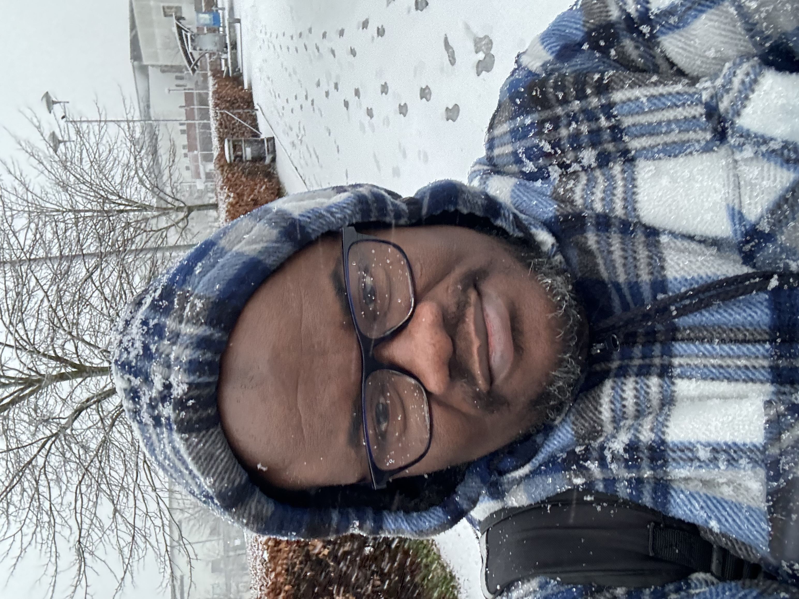

Summary
I am an enthusiastic prospective primary care physician, currently in training to become a GP.
My commitment to improvement in my clinical knowledge skills and patient-centered
consultation is unparalleled and I hope to continue to develop my skill set
in patient care and safety. I am also training to become a competent web developer.
Education
- NHS Education for Scotland, UK
- Olabisi Onabanjo University, Nigeria
- Makun High School Sagamu, Nigeria
- Ofin High School, Sagamu, Nigeria
- St Paul School 1 Sagamu, Sagamu
Work Experience
- NHS Forth Valley, GPST3
- NHS Ayrshire and Arran, GPST1
- Nottingham University Teaching Hospitals, NHS Trust
- Beyond 21stHospital, Lagos
- Springhill Hospital, Mowe
- Federal Medical Centre, Azare
Skills
Awards and Certification
- GPST3, NHS EDUCATION FOR Scotland
- Certfied ALS provider
- MBChB (OGUN) 2012
- SSCE Makun High School 1998
- JSCE Ofin High School 1995

contact me